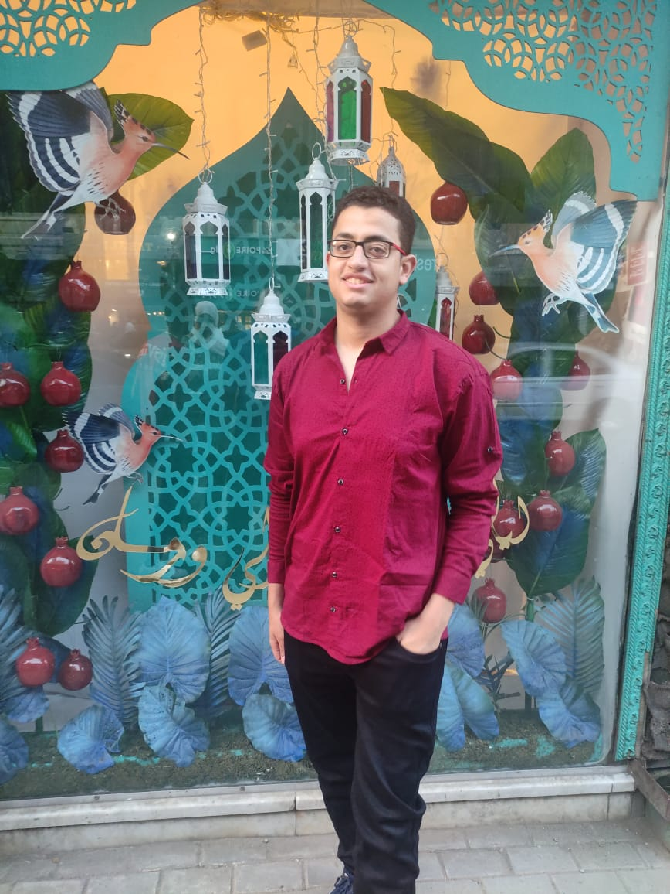

Islam Mahfouz
@codezilla_
more_horiz

Hazem Sayed
@Hazem sayed_
more_horiz

Sorry for showing you so many irrelevant & annoying ads on Twitter! We’re taking the (obvious) corrective action of tying ads to keywords & topics in tweets, like Google does with search. This will improve contextual relevance dramatically. 12:21 PM · Feb 17, 2023 · 67.4M Views

PERSPECTIVE: Since January 2022, @Tesla has had 21 "recalls" for 4,132,303 cars (some counted multiple times). 99% of those cars were fixed using a software update that didn’t require customers to go to a dealership or replace parts. Meanwhile, Fiat-Chrysler, Kia, Hyundai, VW &…showmore

تم تحرير الاقباط السته الشباب من عصابه هجره غير شرعيه كانوا ماسكينهم لانهم كانوا في صدد الهجره لايطاليا..الحمد لله و صحتهم طيبه…نشكر السلطات الليبية علي جهودهم …

الحمدلله ♥️ فيلم "#العارف" مستمراً في التربع علي قائمة أفلام الموسم، كاسراً لحاجز الـ٥٥ مليووووووووون 😎


صوت الهضبة ومزيكته مع انتعاش بيبسى بتفرق كتير!
#خليك_عطشان
I don't Drive Fast I Fly Slowly